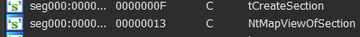
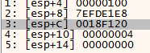
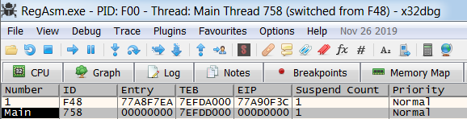

Analyzing Modern Malware Techniques - Part 3
A case of Powershell, Excel 4 Macros and VB6(part 2 of 2)
Preface:
When I was watching The Cycle Of Cyber Threat Intelligence the other day I learned about the concept called “Biases” and how it interferes with researchers and cause them time delays and make big mistakes in general when it comes to research. In this part of the research I was no stranger to my own biases, I like to get my hands dirty, dig deep into binaries and understand EVERYTHING that goes under the hood. It’s simply my nature and my curiosity that can get the better of me. As I was researching this sample, I insisted for the first few days to analyze everything by myself, instead of using great tools that were in my disposal. I ended up spending A LOT of time attempting to unpack the loader instead of using other tools in my arsenal that aided me further analyze the malware itself including the heavily obfuscated loader, thus proving that I do as everyone else have my own biases and sometimes its better off to simply stop, reassess your goals and re attempt to understand the big picture. So here we go - Part 3 hope you enjoy this one 
Background knowledge required:
- Knowledge in C and Assembly
- Knowledge in WINAPI
- Knowledge in IDA and x64dbg
- Novice experience with analyzing obfuscated and packed code
- Knowledge in PE Injection techniques(Process Hollowing especially for this one)
Tools used
- Any.Run
- IDA
- PEBear and PEID
- Resource Hacker
- Process Monitor
- Process Explorer
- x64dbg
Goals:
- Unpack malware
- Understand covert launching
- Disable anti debugging and anti vm techniques(if there are any)
- Identify basic host based signatures
- Identify basic network based signatures
Basic Static and Dynamic Analysis:
Some side notes:
This malware performs process injection, the memory addresses you’ll see in my debugging pictures will be different because I had to re-execute the malware several times and because of the dynamic nature of memory allocation, you’ll sometimes see different addresses being shown.
Using Hybrid Analysis I’ve collected some dry information about the activity of the sample:
Anti debugging:


Process Injection:

Dropped artifacts:


Then I decided to load IDA and x64dbg to analyze the malware, which caused a significant delay in my analysis, I decided to stop and reassess the situation. The binary was so heavily obfuscated that It was getting real hard to impossible to analyze it without the usage of external tools. I decided to use API Monitor to collect a list of APIs the malware calls that could perhaps aid my debugging but the anti debugging techniques this malware deploys can crash, stop and confuse any debugger I threw at it including API monitor. The malware would simply not execute under any debugger attached. As a final resort I decided I’ll use process explorer and process monitor to understand what is going on exactly upon execution. Luckily for me - the malware did execute under a VM.
Process Monitor & Process Explorer:
It could be observed, under execution that first the sample would launch and begin to eat up CPU usage that indicates its unpacking, Then it would launch a sub process called RegAsm.exe, which is a known Microsoft application for registering .NET assembly. Malware frequently uses this binary to inject code into, and indeed as mentioned before hybrid analysis detected that memory is being injected into this binary.

The malware launches RegAsm.exe and it seems to launch with the sample path in the command parameters.
Then it can be observed that as soon as RegAsm.exe is launched, a conhost.exe(cmd.exe) is launched with strange parameters:
After waiting for a while we can observe TCP network connections being made to remote addresses:


In addition we know that the malware drops a file into disk called “OOlqs” into the %appdata%/aljwSjH/ directory, this file is created with hidden attributes. after executing the malware I examined the file and it seems to be a copy of RegAsm specifically the version the malware is launching as the victim sub process (v2.0.50727).


They contain the exact SHA-256 checksum which leads me to believe that the malware will launch its own dropped RegAsm.exe variant incase the specific version of RegAsm.exe is not found on the computer.
In addition RegAsm.exe is attempting to query sensitive data files:

For the above example it is attempting to open Chrome and FireFox data files which strikes me as very suspicious. Later on I noticed the following:

These are sensitive data files for various browser and other applications(Yandex, Chrome, Comodo, Firefox), this binary without a doubt is performing very suspicious activity.
Advanced Static and Dynamic Analysis:
We’ll have to find a way to dump the payload from memory. As I mentioned before, attaching to RegAsm.exe will cause it to crash, so this option is a no go. What we must do Is attach to the sample which I named infected.exe (just in case the malware deploys any tricks looking for SHA-256 checksum named processes or processes running containing the strings “sample”, “malware” etc).
Looking at this malware strings or imports in IDA yields nothing, no imports and no strings. We go straight into debugging.
In addition, to ease our analysis - lets install SycllaHide which will stop some of the anti debugging techniques this sample employs(thanks @0x00dtm for the advice). Lets turn on all the options for anti-anti debugging as this will aid us greatly in analyzing this sample.

In my previous article we loaded up the sample in IDA to find out its a VB6 file. I fixed it up with an IDC script but it didn’t help much, So this time I simply decided to execute it in x64dbg and make an educated guess that if we set a breakpoint on VirtualAlloc might lead us somewhere:


The breakpoint was hit about 7 times, but each time it was hit outside our main module, on the 8th try I viewed the call stack and it seems to been executed from the main module this time:


Interesting, I decided to view the contents of the newly allocated address:
Obviously it’s empty, how ever I wanted to check if it would fill up. To check we must add a hardware breakpoint on the address 0x00250000 and make the debugger break if this memory region gets accessed. so let’s do just that:

And …

but alas, this is no PE file header, and we try to continue looking for more breaks on VirtualAlloc, and continue executing the application it will crash. But then, perhaps this code is a shellcode, that might get executed? Hmm, lets try to find this allocated section again by re executing the sample.
So again I found the allocated area this time it hit on 0x00240000. I decided to analyze the memory as code by viewing it in disassembly:


And it looks like valid code, So I decided to place a breakpoint on it.
but it did not execute… hmm, Probably because I set it as a memory breakpoint and this binary is riddled with anti debugging traps, I decide to put a hardware on execution breakpoint on the allocated area and what do you know:

We break on the allocated shellcode!
The call stack indicates it was called from 0x0041B17F
First thing I did was dump the shellcode using the Syclla and moved the memory dump into my Static Analysis machine, this code is not executable but we can analyze it on IDA. Since each execution this shellcode will be allocated in different areas it will be a bit harder to analyze it but the last 4 bytes of the code addresses have the same offset all the time so it’s still possible.
Usually, when I hit this kind of code that I have no idea what it does so I decided to traverse around it to see if I find anything interesting. the first artifact I find is located at offset 0x52AF from the begging of the allocated code, a call to LoadLibraryA is performed at address offset 0x52B8 and then a Call to GetProcAddress is performed inside sub_offset52E4 at offset 0x52FD:
IDA View:


x64dbg View:


We can see that various API’s are being resolved and this is not uncommon for this type of heavily obfuscated malware, it is deploying what is called Dynamic API resolving which means all APIs will be resolved dynamically making the analysis much harder. As we Recall, I assumed that this malware will perform Process Hollowing on RegAsm.exe and the dry analysis we performed using Hybrid-Analysis actually gave us more prove that this in fact MIGHT be correct. Since we found the API resolving method for this malware, we can set up a breakpoint on func_LoadLibraryCall(at offset 0x52AF) for this function and see if any API’s that are related to process hollowing or code injection will be met. I have reason to suspect this is might actually work because if we check the references for func_LoadLibraryCall we can see its being called a lot during execution.

So let’s be on the lookout for:
VirtualAllocEx
GetFileSize
CreateProcess
NtGetContextThread
NtReadVirtualMemory
NtWriteVirtualMemory
NtResumeThread
NtUnmapViewOfSection
NtProtectVirtualMemory
A list of APIs I’ve encountered in the API resolving routine:
TerminateProcess
EnumWindows
NtProtectVirtualMemory
DbgBreakPoint
DbgUiRemoteBreakin
NtSetInformationThread
NtAllocateVirtualMemory
NtGetContextThread
NtSetContextThread
NtWriteVirtualMemory
NtCreateSection
NtMapViewOfSection
NtOpenFile
NtClose
NtResumeThread
CreateProcessInternalW
GetLongPathNameW
Sleep
CreateThread
WaitForSingleObject
TerminateThread
AddVectoredExceptionHandler
CreateFileW
WriteFile
CloseHandle
GetFileSize
ReadFile
ShellExecuteW
SHCreateDirectoryExW
RegCreateKeyExA
RegSetValueExA
As expected I’ve extracted APIs that might indicated process hollowing.
I’ve noticed two interesting things about this sample regarding the API resolving, One is that each run these strings are loaded from the exact sample location 0x44XX - 0x4XXX, this means that we dump this memory section again and look at the strings in their decrypted form! also I think the author made a mistake because if we’ll view the strings through IDA we can see that he didn’t encrypt all of them:

Anyway, on with the analysis, we can actually notice that during this API resolving the malware already spawned RegAsm.exe as a child process and we finishing looping around the API resolving function the malware terminates itself and we can see RegAsm.exe begins to execute independently.
We must restart the program but this time we need to choose the correct APIs to break on, If we break on these APIs using memory breakpoints the malware will detect this and force the debugger to stop execution on a debugger trap so we must perform this using hardware breakpoints.
We can only set 4 at a time, So let’s choose the following APIs:
- CreateProcessInternalW
- ZwWriteVirtualMemory
- NtResumeThread
- ShellExecuteW
After the APIs are resolved we break at CreateProcessInternalW:

We can view the parameters being passed to the function, and unfortunately this API is not documented AT ALL. but we can kinda make sense from whats going by looking at CreateProcessA which calls CreateProcessInternalW.
BOOL CreateProcessA(
LPCSTR lpApplicationName = RegAsm.exe
LPSTR lpCommandLine = Our sample
LPSECURITY_ATTRIBUTES lpProcessAttributes,
LPSECURITY_ATTRIBUTES lpThreadAttributes,
BOOL bInheritHandles,
DWORD dwCreationFlags = CREATE_SUSPENDED(0x00000004)
LPVOID lpEnvironment,
LPCSTR lpCurrentDirectory,
LPSTARTUPINFOA lpStartupInfo,
LPPROCESS_INFORMATION lpProcessInformation
);
This is our first indication of process injection. First the malware spawns RegAsm as a suspended process which can be viewed in process explorer:

Let’s continue.
Then we break on ZwWriteVirtualMemory:

The undocumented Internals website states that:
“NtWriteVirtualMemory is similar to WINAPI WriteProcessMemory. See Ms SDK for detailed description of parameters.”
Side note, In userland calls to Nt prefix and Zw prefix dont matter they are both the same, I assume malware utilizes these calls to avoid AV detection since these APIs might not be monitored.
So let’s look at that:
BOOL WriteProcessMemory(
HANDLE hProcess,
LPVOID lpBaseAddress,
LPCVOID lpBuffer,
SIZE_T nSize,
SIZE_T *lpNumberOfBytesWritten
);
hProcess holds the handle to the process we want to write, 0x100 corresponds to the RegAsm.exe Process, this can be seen in the Process Explorer:
we’re writing 0x5DC bytes starting from address 0x005F7D00. I looked it up in the dump it doesn’t seem to contain much of interest to us. so I’ll continue with execution.
We break on ZwWriteVirtualMemory again!:

This goes on 2 mores times until I hit something interesting:

huh… it seems to inject the shellcode we are debugging right now straight into RegaAsm.exe, we can check this by viewing 0x4B0000 in disassembly view in x64dbg:

Next API that is NtResumeThread that will probably cause the newly created thread in RegAsm.exe to execute and we don’t want to execute that because the malware will continue execution! Now what’s really cool here, is that we can attach to RegAsm.exe and put a breakpoint on the shellcode and resume the new thread and break on the malware again!
Now I’ve attached to RegAsm.exe 
If we got in the Threads tab in x64dbg We see a suspicious thread with EIP 0xD0000(Will be different on your machine) but the and it seems to be marked as the main thread, this is highly suspicious behavior. let’s go into that thread and place a breakpoint at its start address and simply resume it.

{kind=link}
{kind=link}
{kind=link}
And we hit it our breakpoint!
{kind=link}
In the case of this malware, it was not a classic process hollowing attack but an interesting case of code Injection, because in classic case of process hollowing, the attacker must unmap the original PE out of the process and thus hollow the process and then remap his own PE into the process. In this case it seems that the malware maps just its code into the memory of the other process and sets the main thread to execute on this newly allocated code. This method is easier to execute but more detectable, as it would seem that new shellcode is being run from a suspicious area in the code that does not match the original entry point of the image located in the Optional Header field. In addition the malware author did not bother masking the injection and we can see that the executing code is going to be executing in memory which is in READ, WRITE and EXECUTE privileges:

This is highly suspicious.
Next Let’s put a breakpoint on our API resolve routine at offset 0x52B8 and see what new API’s are going to be called in this new executing code.
TerminateProcess
EnumWindows
NtProtectVirtualMemory
DbgBreakPoint
DbgUiRemoteBreakin
NtSetInformationThread
NtAllocateVirtualMemory
NtGetContextThread
NtSetContextThread
NtWriteVirtualMemory
NtCreateSection
NtMapViewOfSection
NtOpenFile
NtClose
NtResumeThread
CreateProcessInternalW
GetLongPathNameW
Sleep
CreateThread
WaitForSingleObject
TerminateThread
AddVectoredExceptionHandler
CreateFileW
WriteFile
CloseHandle
GetFileSize
ReadFile
ShellExecuteW
SHCreateDirectoryExW
RegCreateKeyExA
RegSetValueExA
InternetOpenA
InternetSetOptionA
InternetOpenUrlA
InternetReadFile
InternetCloseHandleA
One can notice that this time, the code resolved 5 more APIs! these are the internet APIs.
Now after we resolved the APIs and probably decrypted the payload we can do two things, One is collect all the API’s we find of value that can contribute to our understanding of this malware and dump the decrypted form of the malware as we can we can extract some strings out of it which can be done at your own machine because as we saw the strings are always located at offset 0xXXXX44XX and can viewed in the IDA string view here is an example:
){kind=link}

These decrypted strings can aid greatly in understanding this malware more in depth. The strings marked in red indicate that the malware might be downloading more artifacts off the internet and might be attempting to hide itself in traffic using legitimate looking network strings.
Wow, Alright! we gathered a lot of information, and we might get lost if we don’t summarize our findings and understand what is our current status so let’s stop for a second and reassess.
Where should I continue from here?
We’ve covered a lot here and this article is getting really long. There is so much to go from here -
- We’ve managed to unpack the malware first stage loader and the payload
- We have a list of APIs that can aid us explore the loader and the payload
- We understood the malwares stealth injection technique
- We managed to load the payload into memory and gain control over it
- We got a lot of artifacts and IOC’s that can aid us greatly in deeply analyzing this piece of malware.
This was no easy task, we had to defeat a packer and really tough obfuscation techniques. When I began writing this post only 12 AV engines managed to detect this file as malicious so let’s give us a tap on the back.
See you guys next time!
Sources:
Sample used(SHA - 256) - 6ffb945247085ceb6b2478c643dc337a35d5c0c17d2e4709c3a5842c9bcb3e3/5e25c5f7a2b4a8790d7d1bbf
https://www.amazon.com/Practical-Malware-Analysis-Hands-Dissecting/dp/1593272901